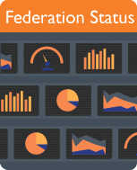
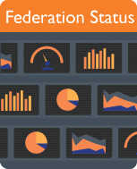

AAF Services Dashboard
Test Federation
Useful Test Tools
Useful Tools
AASC automates the installation of required software in order to build a simple Service Provider, reducing the required effort from hours to just minutes.
The Attribute Validator is a tool that validates your identity’s attributes ensuring that they are suitable for consumption by AAF connected services.
 Federation Registry is a system for administrators to manage information about their organisation’s systems and services connected to the AAF.
Federation Status monitors the availability of Identity Providers and Service Providers connected to the Federation and alerts viewers when a connection issue is experienced.

AAF Assurance records user identities who have been assured for a higher level of identity assurance, as some Service Providers require additional validation in order to access their service.
Federation Registry is a system for administrators to manage information about their organisation’s systems and services connected to the AAF.
Federation Status monitors the availability of Identity Providers and Service Providers connected to the Federation and alerts viewers when a connection issue is experienced.

AAF Assurance records user identities who have been assured for a higher level of identity assurance, as some Service Providers require additional validation in order to access their service.

Using this new method to technically add services to the AAF is quicker and uses less code, compared with the traditional Shibboleth method of connecting services to the Federation.
The AAF Virtual Home allows AAF-subscribed organisations to create user accounts for collaborating researchers who do not belong to an AAF-subscribed organisation. For example, this could be a researcher in the private sector who is collaborating with an institution. The researchers Virtual Home account is granted access to all AAF-connected services.


Other Important AAF Services
The AAF website is primary resource for all information, such as AAF subscription information and fees, past, present and future projects, training schedules, recent news and more.
 The AAF Knowledge Base is a resource for commonly asked questions, with searchable topics for researchers, operational staff and technical staff.
The AAF Knowledge Base is a resource for commonly asked questions, with searchable topics for researchers, operational staff and technical staff.
 The AAF Service Catalogue displays a list of Service Providers connected to the AAF. The majority of these services are open to all users associated with an AAF-subscribed organisation.
The Service Desk is monitored during business hours, and is a single point of contact for getting in touch with the AAF team.
The Wiki contains technical information, how-to's and guides.
The AAF Service Catalogue displays a list of Service Providers connected to the AAF. The majority of these services are open to all users associated with an AAF-subscribed organisation.
The Service Desk is monitored during business hours, and is a single point of contact for getting in touch with the AAF team.
The Wiki contains technical information, how-to's and guides.

Stay Connected with the AAF
Follow us on Facebook!
 Follow us on Twitter!
Follow us on Twitter!
 The technical newsletter is published every quarter, and is a great way to stay up to date with the technical news.
The general newsletter is published every quarter, and is a great way to stay up to date with the AAF.
The technical newsletter is published every quarter, and is a great way to stay up to date with the technical news.
The general newsletter is published every quarter, and is a great way to stay up to date with the AAF.
 Much of the AAF’s code is open-source, meaning it’s available for use by anyone.
Much of the AAF’s code is open-source, meaning it’s available for use by anyone.